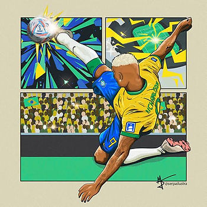
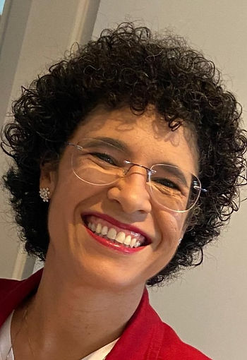

Texto de Drix Pereira ou…
Dra. Adriana Bernardes Pereira – PUC/Goiás
Há cerca de quinze anos realizei um doutoramento na PUC/SP no qual o tema versava sobre: A construção social do jogador profissional de futebol no Brasil. O texto trazia o viés contundente da ‘Psicologia Social do Esporte’, termo cunhado por Katia Rubio à época. A inclusão do termo Social veio a acrescentar, pleonasticamente, a lembrança de que toda a Psicologia é social – Freud 1930. O que esses autores afirmaram é que toda subjetividade humana é formada a partir dos aspectos biopsicossociais presentes nas redes de relações nas quais as pessoas humanas estão inseridas. As pessoas não fazem parte das relações que vivem apenas como peças em uma engrenagem; elas são ativas no processo e se modificam a cada experiência, em cada movimento de troca que produz aprendizagem e desenvolvimento. Toda essa complexidade exige um conhecimento profundo da ciência que embasa o comportamento humano – a Psicologia.
Considerar como os aspectos biopsicossociais fazem efeitos sobre as pessoas e seus comportamentos é justamente o ponto que precisa ser incorporado na formação do aluno de psicologia e no entendimento da população sobre as nossas práticas. Somos ensinados a ouvir as especificidades emocionais de cada ser humano e como foram elaborados seus desejos, sonhos e expectativas de forma contextualizada e profissional. Nosso trabalho não é simples e muito menos fácil. São anos de preparação para adquirir a expertise de funcionar como mediador do processo de um jogador tornar-se alguém emocionalmente forte no exercício de sua profissão.
A copa do mundo de futebol de 2022, ocorrida no Catar, nos mostrou mais uma vez que a saúde mental dos jogadores importa e que, novamente, o tema só vem à tona quando os sintomas do despreparo para a grandiosidade do evento emergem de forma dolorida e trágica diante das expectativas. Entretanto, não vou cutucar a dor. Vou aqui discorrer sobre o que acredito, depois de mais de 20 anos como psicóloga do esporte. Vou tentar trazer luz a reflexão dos equívocos sociais que levam a tamanho desprezo pelo aceite verdadeiro do trabalho da Psicologia nas comissões técnicas de todo e qualquer esporte de rendimento.
Não Tite, você não pode ser o psicólogo da seleção brasileira de futebol masculino. E não pode porque apesar de entender de aspectos técnicos e táticos do futebol, acompanhar seleções pelo mundo inteiro, conversar com os jogadores para saber como eles estão e até, por vezes, fazer o papel de pai. Todo esse conhecimento e boa intenção não te habilita a exercer a função do profissional de psicologia.
Você precisa se submeter ao trabalho em conjunto com sua equipe. Precisa nos ajudar a esclarecer que construir um grupo requer a cada um fazer sua parte com a expertise para qual foi treinado. Você não foi treinado para diagnosticar nuances dos processos de aprendizagem e desenvolvimento humanos, não sabe caracterizar um padrão de comportamento a ponto de classificá-lo como personalidade x ou y e, ainda, ter que usar essa informação para ajudar o grupo de forma eficiente. Você parece não saber que liderança, como proposta por Kurt Lewin, não é escolhida por um chefe, ela emerge a partir da dinâmica do próprio grupo.
E a comunicação do grupo querido Tite? Ela é peça chave para fazer fluir interna e externamente o comprometimento com os objetivos grupais, sem deixar de lado os aspectos individuais. Ela é o termômetro da interação para todos os momentos, sejam eles de euforia ou decepção. Falar é sempre necessário, mesmo que seu estilo pessoal seja de recolhimento. Cabe aos mais experientes levar a palavra de conforto e entendimento aos mais novos, para que se sintam acolhidos e tenham suporte emocional para entender que nem sempre as coisas saem como programadas e que faz parte do jogo ganhar e perder. Prepará-los para a derrota não é feio, feio é não contar com ela! E, por mais que nossos atletas estejam treinados para receber possíveis perguntas capciosas, eles precisam estar treinados para falar sob pressão e sob estado de frustração. Entender tudo isso e criar procedimentos para essas situações é trabalho do profissional de psicologia caro “professor”.
Talvez essa confusão se deva porque nossos aparatos de intervenção, nossos estetoscópios, cronômetros e bisturis consistam das habilidades de observar, ouvir, relacionar históricos familiares, saber conversar. E, sobretudo, usar nossas técnicas para, por meio das palavras e treinos cognitivos, levar o jogador a tomar consciência de sua vida, seus caminhos, suas metas, seus sonhos e possibilidades reais de realização de suas expectativas.
É necessário fazer os jogadores entenderem que seus sonhos fazem parte e coincidem com os sonhos de centenas de milhares de pessoas que querem ser como eles, se projetam neles. Eles lutaram para representar essas pessoas e elas cobrarão dele uma postura profissional, digna e combativa mesmo que permitam originalidade, arte e alegria.
A Psicologia social do esporte foi construída a partir de muitos estudos, muitas teorias e metodologias que se somam para explicitar como o fazer, o pensar e o sentir podem ser conhecidos, treinados e, até certo ponto, controlados para um fim específico. Tudo isso considerando contexto histórico de cada um, do grupo como um todo e do significado sociocultural daquela determinada modalidade, em uma determinada competição.
Os jogadores precisam saber que os conhecimentos psicológicos aplicados com atletas estão a serviço de seu treinamento e que existem profissionais capacitados para o trabalho. O ofício do profissional de psicologia inclui adentrar suas vidas na intimidade, conhecer seus históricos familiares, estabelecer vínculo, construir confiança mútua para gerenciar expectativas, dores, amores e sonhos. Os jogadores precisam saber da importância econômica e social da rede na qual estão inseridos e, ainda, querer ter a consciência política da sua função social como protagonistas de toda essa rede de interesses. Isso leva tempo para entender e executar, Sr. Treinador, e precisamos contar com você nessa jornada educativa. A preparação psicológica precisa fazer parte da cultura do futebol, precisa estar presente desde sua formação ainda na base e sem os preconceitos e associações com loucura ou religião.
A forma do trabalho psicológico é sempre constante e interdisciplinar com todos os outros profissionais da comissão técnica e, várias vezes, com membros externos ao grupo em questão. Todos importam nesse trabalho psicológico com os atletas; o preparador físico, o dono do clube, a esposa, o fisioterapeuta, o patrocinador, o médico, o massagista, o jornalista, o roupeiro, a cozinheira etc. Ninguém precisa e não deve fazer o trabalho do outro, mesmo que todos saibam receitar anti-inflamatório, alongar, ganhar dinheiro, namorar, fazer uma massagem, lavar roupas ou fritar ovos.
O futebol, como toda as modalidades esportivas de alto rendimento, descreve o fenômeno social contemporâneo mais amplo e de maior expressão do planeta terra – o fenômeno esportivo – e tudo que sua rede de atores demonstra, gerando uma matriz que faz circular enormes cifras monetárias nos mais diversos setores da sociedade.
Atinge crianças, jovens, adultos e velhos. Mexe com expectativa e sonhos de pessoas em todo o mundo. Faz países pararem diante das telas, executarem obras monumentais e, sobretudo, colocar questões políticas às claras, tamanha a visibilidade que ele permite nos grandes eventos.
Essa copa nos brindou com a necessidade de sairmos da alienação geopolítica. Nos apresentou questões tão importantes como direitos humanos, racismo, xenofobia, misoginia e até a causa da Palestina e todo sofrimento de seu povo veio à tona, apesar de todo o controle midiático de seus antagonistas. Tudo isso em meio ao esporte jogado nas quatro linhas e controlado tecnologicamente em cada metro do campo.
Tudo ficou explicitado diante do espetáculo, todos são sensibilizados pelas mais diferentes questões diante das quais são tocados diretamente ou indiretamente. Então, por que os jogadores não ficariam? Por que não reconhecer a necessidade de preparação do jogador para seu papel como atleta de rendimento, mas, também um ser político que precisa estar consciente do terreno onde está pisando? Entender globalmente e atuar localmente é o lema do psicólogo social e o esporte ambiente mais propício para execução de nosso trabalho.
Nosso país já avançou muito na consciência de quem somos diante do mundo, do valor que temos após anos de colonização, exploração, racismo e menosprezo. O futebol, assim como nossa cultura musical e alegre foi e é um dos pontos de reconhecimento do nosso valor. Nós, anteriormente chamados de vira latas, viramos nobres na arte da bola nos pés, nosso rei é negro e fizemos o mundo se curvar a ele. Resistências sempre vão existir, criticarem nossas danças e nossa alegria nada mais é do que a tentativa explícita de colonizadores exercerem seu despudor racista – pobres europeus. E quando o samba for parado na avenida, porque no jogo de bola se ganha e se perde como metáfora da vida, ficaremos tristes até o carnaval seguinte e, quem sabe, o tango dos Hermanos venha nos redimir, venha mostrar a forças dos subdesenvolvidos, da miscigenação indígena, colombiana, espanhola e africana.
Tudo isso nos mostra o poder de alcance do futebol, atingindo grande parcela da população mundial e por conseguinte seus efeitos sobre as diferentes culturas, diferentes marcadores sociais (classe, raça, religião, gênero etc.) e sobretudo anuncia e visibiliza a ordem social, implicando todos os sistemas vigentes, normas e valores culturais que caracterizam a diversidade no mundo.
Cultura, mercado e individualidades formam uma rede e geram tensão quando expostos de maneira tão ampla, chegando a ultrapassar os limites do controle sobre tudo que nela faz circular. A copa do mundo se tornou exemplo claro daquilo que Guy Debord (1997) intitulou de sociedade do espetáculo. Ambiente midiaticamente criado para gerar valores e os fazer circular, impondo padrões de consumo, formas de ser e estar no mundo e controle absoluto do show da vida dos protagonistas e de tudo que os cerca.
O espetáculo extrapola as quatro linhas, alcança a nossa intimidade, nossos desejos, molda nosso pensamento e nos faz desejar sem anunciar a possibilidade das frustrações, das perdas e das derrotas. Se você ou seu time ganham, ao vencedor todos os louros, confetes dourados demonstram o ápice do espetáculo, e nós ficamos felizes, pois fomos treinados e condicionados para a cena imaginária do sucesso. Aos demais a dor da perda da ilusão e do sonho que não se concretizou até que no dia seguinte no qual tudo se atualiza e volta para reiniciar o ciclo e seguimos adiante para um novo espetáculo.

Dra. Adriana B. Pereira – Drix Pereira
Associada ABRAPESP e atual líder do Grupo de Estudos em Gênero Esporte e Mídia – DIRETOS HUMANOS vinculado ao Curso de Psicologia da PUC Goiás, foi diretora e cordenadora do Curso de Psicologia no período 2010/2015 é graduada em Psicologia pela Universidade de Brasília – UnB (1992), Mestre em Educação Especial (Educação do Indivíduo Especial) pela Universidade Federal de São Carlos – UFSCar (1995), Especialista em Psicologia do Esporte pelo Conselho Federal de Psicologia – CFP (2000) e Doutora em Psicologia Social da PUC/SP (2008). Professora Adjunto da Pontifícia Universidade Católica de Goiás